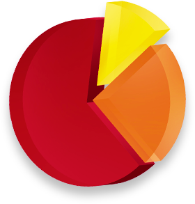

<div class="wrapper-S5">
  <div class="container">
    <section class="section5">
      <h1 class="title"><span class="title-blue">SOFT SKILLS – </span>это: </h1>
      <div class="square">
        <picture>
          <source
            media="(min-width: 768px)"
            srcset="../img/chart_index.png">
          
        </picture>
        <div class="part part1"><p class="item">career skills</p>
          <p class="percent">10% времени</p></div>
        <div class="part part2"><p class="item">english</p>
          <p class="percent">20% времени</p></div>
        <div class="part part3"><p class="item">Agile</p>
          <p class="percent">70% времени</p></div>
      </div>
      <div class="article article-agile">
        <h2 class="sector">Agile </h2>
        <p class="info">Теория и практика работы в командах над проектами по Agile-методологиям (гибкая разработка-
          ценности и принципы, которыми руководствуется команда) - используются во всех ТОП IT-компаниях Украины.</p>
      </div>
      <div class="article">
        <h2 class="sector">English</h2>
        <p class="info">Доступ к обучающей платформе, где вы изучаете IT-английский. После курса вы получаете 2
          сертификата: 1-й подтверждает общий уровень владения английским языком, 2-й - по IT-English.</p>
      </div>
      <div class="article">
        <h2 class="sector">Career Skills</h2>
        <p class="info">Практическая подготовка к HR-интервью, прохождение технического интервью с менторомБ поддержка
          при
          трудоустройстве.</p>
      </div>
      <button class="btn btn1">Начать обучение на курсе</button>
    </section>

  </div>
</div>
